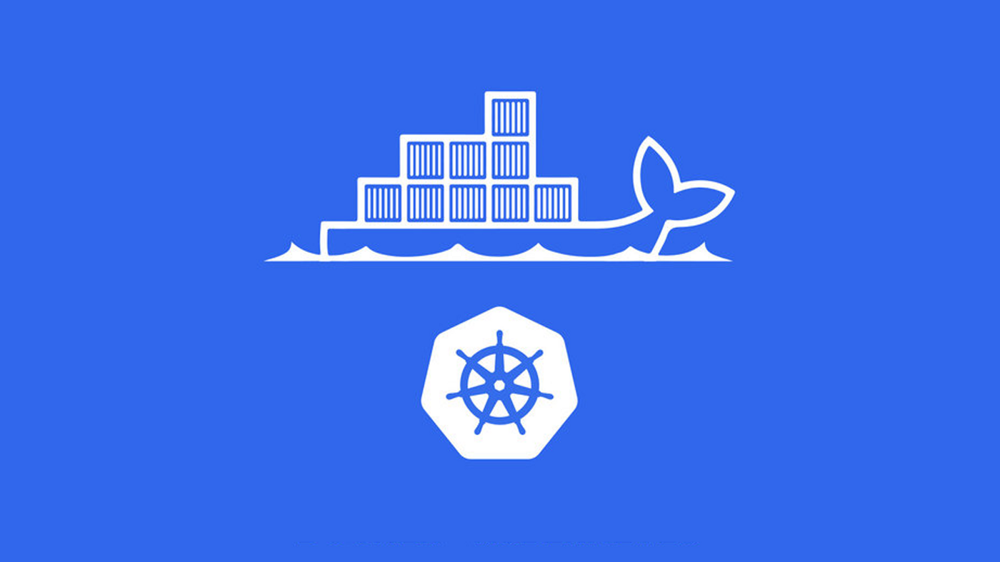
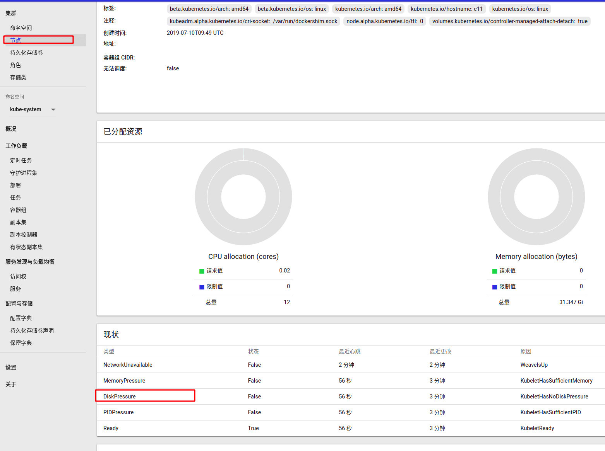

这里主要是为了记录在使用 Docker 的时候遇到的问题及其处理解决方法。
诡异的问题时常发生，如果正确的处理它们呢？将是一个值得思考和学习的问题！通过对错误和异常问题的排除和处理，能够增长我们的知识储备已经掌握处理问题最为有效和使用的方式。这里将会记录常见的集群使用的问题，以备不时之需。

1. K8S 证书过期处理
默认 K8S 集群的证书(certificate)有效期为一年时间 => 最佳的做法是经常升级集群以确保安全
- [问题起因] 监控突然发生了很多报警，反馈对应服务在解析文件的时候发生了异常。因为是时使用集群部署的，所以查看集群对应的
UI界面，发现是证书过期，日志如下所示。
# 集群报错信息显示证书过期了
6月 17 17:23:16 c12 kubelet[23413]: E0617 17:23:16.878470 23413
bootstrap.go:265] part of the existing bootstrap client certificate is expired: 2020-06-14 11:22:14 +0000 UTC
[解决方法] 知道了问题的原因，现在我们需要做的就是如何来更新
K8S集群的证书。更新证书分为自动更新证书和手动更新证书两种方式，当然我们也可以使用源代码编译使得kubeadm生成的证书时间边长。下面，我们来了解下其对应的使用方式吧！自动更新证书： 主要是通过
kubeadm命令来在控制面板升级的时候更新所有证书。如果你对此类证书的更新没有特殊要求，并且定期执行Kubernetes进行版本升级(每次升级之间的间隔时间少于1年)的话，则kubeadm将确保你的集群保持最新状态并保持合理的安全性。如果你对证书更新有更复杂的需求，则可通过将--certificate-renewal=false传递给kubeadm upgrade apply或者kubeadm upgrade node，从而选择不采用默认行为。手动更新证书： 则是通过
kubeadm alpha certs renew命令手动更新集群里面的证书。这个命令用CA证书和存储在/etc/kubernetes/pki中的密钥执行更新操作。如果你运行了一个HA集群的话，则通过这个命令需要在所有控制面板节点上执行，才可以。需要我们知道的是，Kubernetes证书通常在一年后到期自动过期。需要注意的是，但是执行
renew之后，发现并没有生效。原因是因为没有重新生成*.conf配置文件，删除配置文件之后才生效了。
# 重新生成证书
$ kubeadm alpha certs renew all
remove .conf in /etc/kubernetes/
# 重新生成配置文件
$ kubeadm init phase kubeconfig all
# 重启kubelet服务
$ systemctl restart kubelet
# 该命令显示/etc/kubernetes/pki文件夹中的客户端证书以及kubeadm使用的KUBECONFIG文件
# 中嵌入的客户端证书的到期时间/剩余时间，需要注意的是kubeadm不能管理由外部CA签名的证书
# 发现下面的列表中没有包含kubelet.conf，这是因为kubeadm将kubelet配置为自动更新证书了
$ kubeadm alpha certs check-expiration
CERTIFICATE EXPIRES RESIDUAL TIME EXTERNALLY MANAGED
admin.conf Jun 17, 2021 .. 345d false
apiserver Jun 17, 2021 .. 345d false
apiserver-etcd-client Jun 17, 2021 .. 345d false
apiserver-kubelet-client Jun 17, 2021 .. 345d false
controller-manager.conf Jun 17, 2021 .. 345d false
etcd-healthcheck-client Jun 17, 2021 .. 345d false
etcd-peer Jun 17, 2021 .. 345d false
etcd-server Jun 17, 2021 .. 345d false
front-proxy-client Jun 17, 2021 .. 345d false
scheduler.conf Jun 17, 2021 .. 345d false
2. K8S 磁盘容量不足
K8S 检测磁盘容量是按照百分比检测的，而不是实际剩余容量！
- [问题起因] 发现
K8S集群中的一台机器上面部署的服务发生了异常，查看之后发现是因为磁盘容量不足导致该节点异常。其检测机制是，当机器的磁盘容量不足1%的时候，则将该节点标记为异常节点。

- [解决方法] 该问题的处理方法就是，删除服务器上面的数据或者添加磁盘扩充磁盘空间。下面步骤主要是，启动节点的守护进程，比如网络等。
- 先通过增加磁盘控盘空间，来解决节点状态的异常
- 然后重启
kubelet systemctl restart kubelet服务 - 查看
k8s容器的状态，如果pod不全就删了其他的pod，再重启一下kubelet服务 - 如果不行就进到
kube-system namespace界面，在守护进程集把对应的容器组删了，让k8s从新拉起一组
3. K8S 跳板机实例配置
这里只是记录一下，顺便后续自己需要的时候看看。
- [问题起因] 之前
AWS上跳板机的NAT实例gateway上面忘记配置下面这个防火墙规则，导致内网无法ping通外网的IP。
$ sudo sysctl -w net.ipv4.ip_forward=1
$ sudo iptables -A FORWARD -i eth0 -j ACCEPT
$ sudo iptables -t nat -A POSTROUTING -o eth0 -j MASQUERADE
- [解决方法] 这里记一下，上面三条命令到底做了什么呢？
- 第一条：配置
Linux内核参数，主要是用来把Linux当成路由器来用。一般来说，一个路由器至少要有两个网络接口，一个是WAN，另一个是LAN，为了让LAN和WAN的流量相通，需要进行内核上路由转发。 - 第二条：通行所有需要转发的包，只有机器成为一个路由器时，需要在两个网卡间进行网络包转发时，才需要配置这条规则。
- 第三条：关键字
MASQUERADE意思是“伪装“，NAT的工作原理是就像是个宿舍收发室对学生宿舍一样，学生宿舍的地址外部不可见邮递员只看得见整栋宿舍收发室的地址，邮递员把快递交给收发室，收发室再把快递转给学习宿舍（反之，如果学生要对外寄邮件，也是先到收发室，收发室传给邮局）。现在的问题是，所有的学生宿舍如何才能参与到任何快递的通信中，如果把学生宿舍地址发到外部，则没人能把信送回来。如果这个收发室是个自动化的机器人，他要干的事就是，把学生宿舍的地址换成收发室地址。这就是MASQUERADE的意思 —— 来自具有接收方1地址的本地网络到达Internet某处的数据包必须进行修改，也就是让发送方的地址等于路由器的地址。
- 第一条：配置
4. K8S 日志空间不足
不做设置的话，Pod 将使用 emptyDir 这个模式使用临时目录！
- [问题起因] 主要原因就是，对应节点上面启动的容器，占用了太多的临时目录，导致系统使用率太高了。
# 报错提示信息
The node was low on resource: ephemeral-storage.
Container xxx was using 44Ki, which exceeds its request of 0.
- [解决方法] 解决方案有以下几种：
- 第一种就是通过配置如下设置，将容器使用临时空间大小进行限制，设置好值以后，用超过
Limit的话，kubernetes就会干掉我们的Pod服务，防止系统空间不足。 - 第二种就是将
/var/log/目录的磁盘空间改大，有些情况会看到其会挂载到/目录下，而/目录分配的空间有特别小，就会导致这个问题的出现。建议使用该方式，一劳永逸。
- 第一种就是通过配置如下设置，将容器使用临时空间大小进行限制，设置好值以后，用超过
# ephemeral-storage
# 来调度和管理节点上的应用对主分区的消耗
- name: wordpress
image: wordpress
resources:
requests:
ephemeral-storage: "2Gi"
limits:
ephemeral-storage: "4Gi"
5. K8S 服务配置不存在
部署平台要不惜磁盘和内存，不然会存在很多异常的问题
- [问题起因] 部署的时候，发现如下报错信息：
# 报错提示信息
Failed to create pod sandbox: rpc error: code = Unknown desc = rewrite resolv.conf failed for pod "redis-xxx"
ResolvConfPath: "/var/lib/docker/containers/xxx/resolv.conf" does not exist
- [解决方法] 后来发现是内存不足导致的，需要新增内存资源，即可。